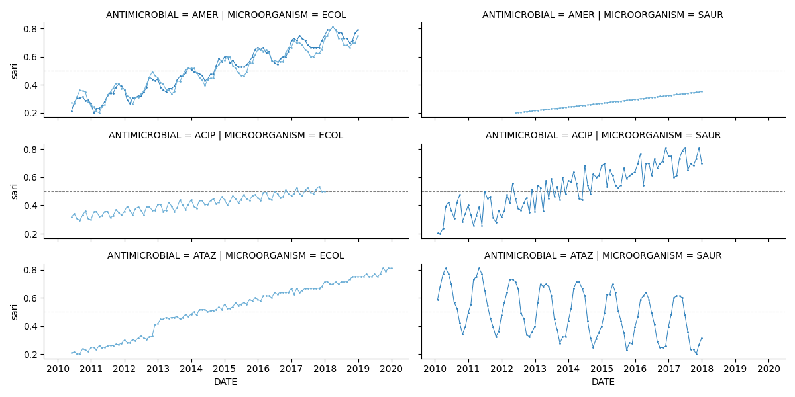

Note
Click here to download the full example code
Generate data AST
Out:
Data:
SPECIMEN MICROORGANISM ANTIMICROBIAL DATE resistant sensitive freq sari
0 BLDCUL ECOL AMER 2010-05-31 30.0 91.0 121.0 0.247934
1 BLDCUL ECOL AMER 2010-06-30 30.0 87.0 117.0 0.256410
2 BLDCUL ECOL AMER 2010-07-31 30.0 71.0 101.0 0.297030
3 BLDCUL ECOL AMER 2010-08-31 30.0 63.0 93.0 0.322581
4 BLDCUL ECOL AMER 2010-09-30 30.0 72.0 102.0 0.294118
.. ... ... ... ... ... ... ... ...
671 URICUL SAUR AMER 2017-08-31 30.0 57.0 87.0 0.344828
672 URICUL SAUR AMER 2017-09-30 30.0 57.0 87.0 0.344828
673 URICUL SAUR AMER 2017-10-31 30.0 56.0 86.0 0.348837
674 URICUL SAUR AMER 2017-11-30 30.0 56.0 86.0 0.348837
675 URICUL SAUR AMER 2017-12-31 30.0 55.0 85.0 0.352941
[676 rows x 8 columns]
7 # Libraries
8 import numpy as np
9 import pandas as pd
10 import seaborn as sns
11 import matplotlib.pyplot as plt
12
13 # -----------------------------------------------------------
14 # CONFIGURATION
15 # -----------------------------------------------------------
16 CONFIGURATION = [
17 {
18 'date': ['2010-01-01', '2018-01-05'],
19 'info': {
20 'SPECIMEN': 'BLDCUL',
21 'MICROORGANISM': 'SAUR',
22 'ANTIMICROBIAL': 'ATAZ',
23 },
24 'kwargs': {
25 'line_offset': 80,
26 'line_slope': -0.3,
27 'sin_amplitude': 5
28 }
29 },
30 {
31 'date': ['2010-01-01', '2018-01-05'],
32 'info': {
33 'SPECIMEN': 'BLDCUL',
34 'MICROORGANISM': 'SAUR',
35 'ANTIMICROBIAL': 'ACIP',
36 },
37 },
38 {
39 'date': ['2010-05-01', '2019-01-05'],
40 'info': {
41 'SPECIMEN': 'BLDCUL',
42 'MICROORGANISM': 'ECOL',
43 'ANTIMICROBIAL': 'AMER',
44 },
45 'kwargs': {
46 'line_offset': 80,
47 'line_slope': -0.01,
48 'sin_amplitude': 1,
49 'noise_amplitude': 1
50 }
51 },
52 {
53 'date': ['2010-05-01', '2019-01-05'],
54 'info': {
55 'SPECIMEN': 'URICUL',
56 'MICROORGANISM': 'ECOL',
57 'ANTIMICROBIAL': 'AMER',
58 },
59 'kwargs': {
60 'line_offset': 10,
61 'line_slope': 0.2,
62 'sin_amplitude': 3
63 }
64 },
65 {
66 'date': ['2010-05-01', '2018-01-05'],
67 'info': {
68 'SPECIMEN': 'URICUL',
69 'MICROORGANISM': 'ECOL',
70 'ANTIMICROBIAL': 'ACIP',
71 },
72 'kwargs': {
73 'sin_amplitude': 3,
74 'sin_stretch': 3
75 }
76 },
77 {
78 'date': ['2010-05-01', '2020-01-05'],
79 'info': {
80 'SPECIMEN': 'URICUL',
81 'MICROORGANISM': 'ECOL',
82 'ANTIMICROBIAL': 'ATAZ',
83 },
84 'kwargs': {
85 'line_offset': 80,
86 'line_slope': 0.3,
87 'sin_amplitude': 0,
88 'jump_start': 30,
89 'jump_amplitude': 5
90 }
91 },
92 {
93 'date': ['2012-05-01', '2018-01-05'],
94 'info': {
95 'SPECIMEN': 'URICUL',
96 'MICROORGANISM': 'SAUR',
97 'ANTIMICROBIAL': 'AMER',
98 },
99 'kwargs': {
100 'line_offset': 20,
101 'line_slope': 0.1,
102 'sin_amplitude': 0,
103 'noise_amplitude': 0
104 }
105 },
106 ]
107
108 def make_series(n_samples,
109 line_slope=0.2,
110 line_offset=30,
111 sin_amplitude=1,
112 sin_stretch=1,
113 sin_c=1,
114 noise_amplitude=2,
115 random=False,
116 jump_start=None,
117 jump_amplitude=5):
118 """Create series...
119
120 f(x) = a * sin( b (x+c)) + d
121
122 """
123 # Configuration
124 if random:
125 line_slope = np.random.randint(10, 20) / 100
126 line_offset = np.random.randint(40, 60)
127 sin_amplitude = np.random.randint(1, 60) / 100
128 sin_stretch = np.random.randint(3, 10)
129 sin_c = np.random.randint(5, 10)
130 noise_amplitude = np.random.randint(10, 20)
131 jump_start = np.random.randint(0, 2)
132 jump_amplitude = np.random.randint(5, 10)
133
134 # Create components and final function
135 x = np.linspace(0, 50, n_samples)
136 line = (line_slope * x) + line_offset
137 noise = noise_amplitude * np.random.rand(len(x))
138 season = sin_amplitude * np.sin(sin_stretch * x)
139 y = line + season + noise + x/5
140
141 # Add a jump.
142 if jump_start is not None:
143 y[jump_start:] += jump_amplitude
144
145 # .. note: This is done to avoid having extreme
146 # values which end up giving a negative
147 # number of R or S. In this case it will
148 # have the same shape but will be using all
149 # the y-axis from 0.2 to 0.8
150
151 # Normalize within the range (20, 80)
152 rmin, rmax = 20, 80
153 if (max(y) > rmax) or (min(y) < rmin):
154 y = ((y - min(y)) / (max(y) - min(y)))
155 y = y * (rmax - rmin) + rmin
156
157 # Return
158 return y
159
160
161 def create_ast_from_values(cfg, nr=30): #y, dates, info, nr=None):
162 """Create AST records.
163
164 .. note:: The values inputed must be between 0 and 100.
165
166 Parameters
167 ----------
168 y: np.array
169 The array with the resistance values, that is the proportion
170 between resistant and isolates (R/R+S). All the values must
171 be within the range [0, 100].
172
173 Returns
174 -------
175 """
176 # Generate dates
177 sdate = cfg.get('date')[0]
178 edate = cfg.get('date')[1]
179 dates = pd.date_range(sdate, edate, freq='m')
180
181 # Generate y function
182 kwargs = cfg.get('kwargs', {})
183 random = not bool(kwargs)
184 y = make_series(dates.shape[0], random=random, **kwargs)
185
186 if nr is None:
187 nr = np.random.randint(10, 100, size=y.shape[0])
188
189 # Compute number of S based on number of R.
190 ns = (((100/y) - 1) * nr).astype(int)
191
192 # Create DataFrame
193 data = pd.DataFrame(data=dates, columns=['DATE'])
194
195 # Fill rest of information
196 for k, v in cfg.get('info').items():
197 data[k] = v
198 data['ns'] = ns
199 data['nr'] = nr
200
201 # Create records by repeating entries and
202 # concatenating the results
203 r = data \
204 .loc[data.index.repeat(data.nr)] \
205 .assign(SENSITIVITY='resistant') \
206 .reset_index(drop=True)
207
208 s = data \
209 .loc[data.index.repeat(data.ns)] \
210 .assign(SENSITIVITY='sensitive') \
211 .reset_index(drop=True)
212
213 records = pd.concat([r, s], axis=0)
214
215 # Return
216 return records
217
218
219 # Constants
220 SPECIMENS = ['BLDCUL', 'URICUL']
221 MICROORGANISMS = ['ECOL', 'KPNE']
222 ANTIMICROBIALS = ['ATAZ', 'AMER', 'ACIP']
223
224
225 # Compute records
226 records = pd.concat([
227 create_ast_from_values(cfg)
228 for cfg in CONFIGURATION])
229
230
231 # ----------------------------
232 # Compute SARI
233 # ----------------------------
234 # Show
235 from pyamr.core.sari import SARI
236
237 # Configuration
238 shift, period = '1D', '1D'
239
240 # Compute the index
241 iti = SARI().compute(records, shift=shift,
242 period=period, cdate='DATE')
243
244 # Display
245 iti = iti.reset_index()
246
247 # Show results
248 print("Data:")
249 print(iti)
250
251 # Initialize a grid of plots with an Axes for each walk
252 grid = sns.FacetGrid(iti, row="ANTIMICROBIAL",
253 hue="SPECIMEN", col='MICROORGANISM',
254 palette="tab20c", height=2, aspect=3)
255
256 # Draw a horizontal line to show the starting point
257 grid.refline(y=0.5, linewidth=0.75)
258
259 # Draw a line plot to show the trajectory of each random walk
260 grid.map(plt.plot, "DATE", "sari",
261 linewidth=0.75, marker="o", markersize=1)
262
263 # Show
264 plt.tight_layout()
265 plt.show()
Total running time of the script: ( 0 minutes 1.760 seconds)